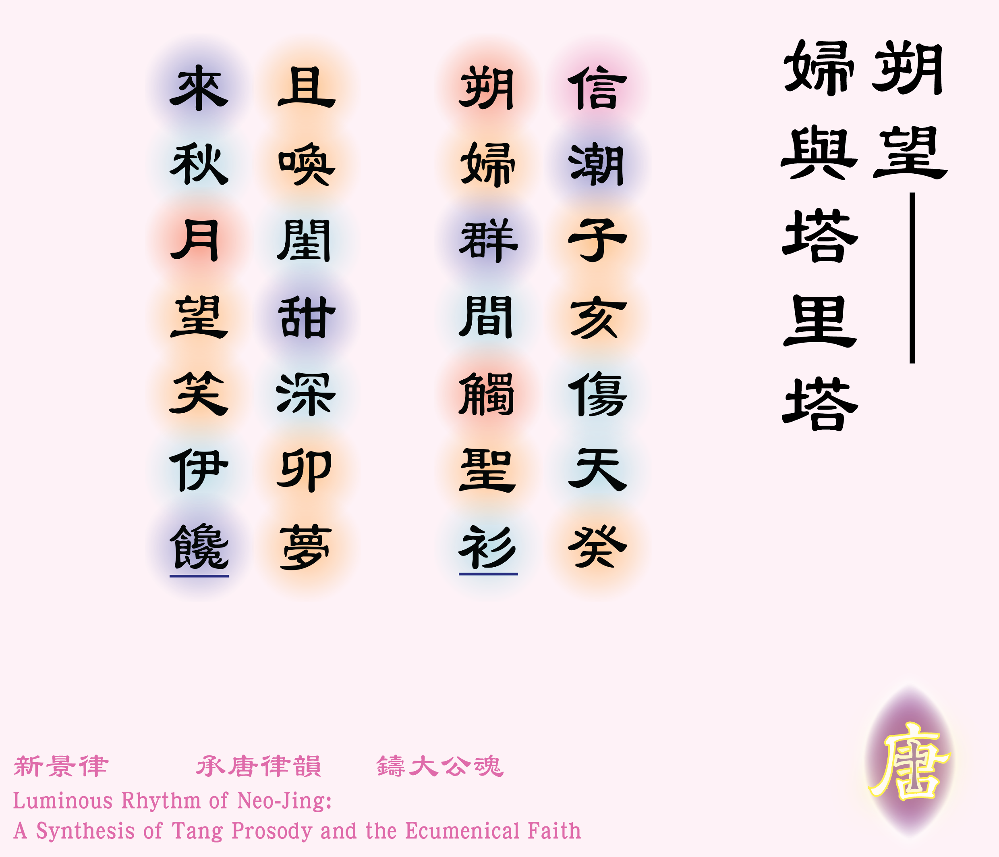
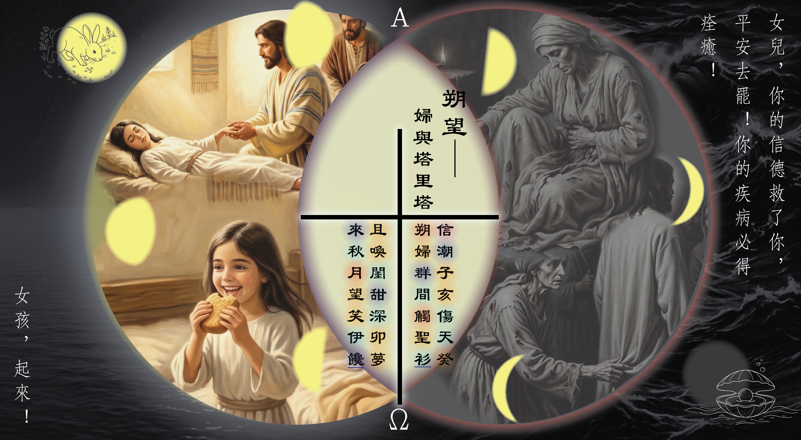

![[如果未顯示圖片，請確認 圖例_2-01.jpg 已放入同資料夾]](圖例_2-01.png)

信潮子亥傷天癸 [1]* 信潮：指代血漏病，古人雅稱月經為月信，潮汐亦受月球引力影響，初一十五時潮汐特別強烈，故以信潮指代。
** 子亥：十二年，子為十二地支之首，亥為十二地支之末。
*** 天癸：中醫學名詞，意指「促進人體生長、發育和生殖機能，維持婦女月經和胎孕所必需的物質。它來源於男女之腎精」，見張儷俊：〈婦人天癸竭後諸症之中醫療法〉，《中國中醫臨床醫學雜誌》 10卷1期 (2004/03) Pp. 31-33，網址：https://www.airitilibrary.com/Article/Detail/a0000034-200403-10-1-31-33-a，朔婦群間觸聖衫 [2]朔：新月、初一的意思。。
且喚閨甜深卯夢 [3]卯：十二地支之第四，五行屬木、生肖屬兔，時辰為早上五時至七時，也代表春天。，來秋月望笑伊饞 [4]望：滿月。。
體裁：七言絕句（平起首句不入韻）
韻部：平水韻．十五咸
創作日期：二零二六年九月九日
